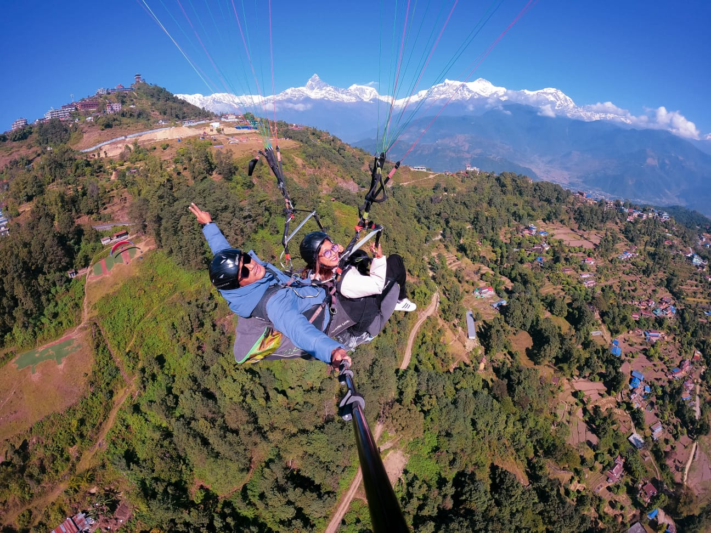
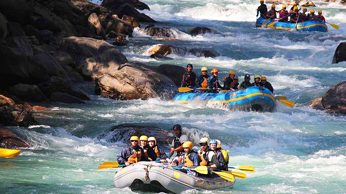
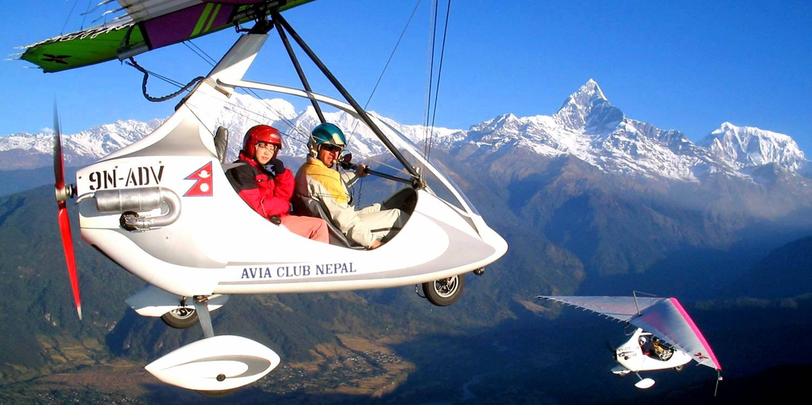
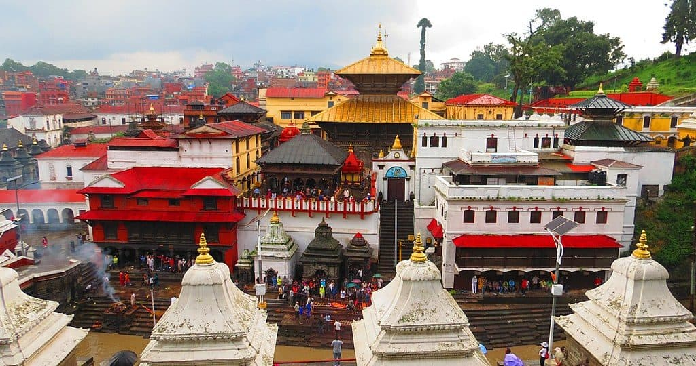
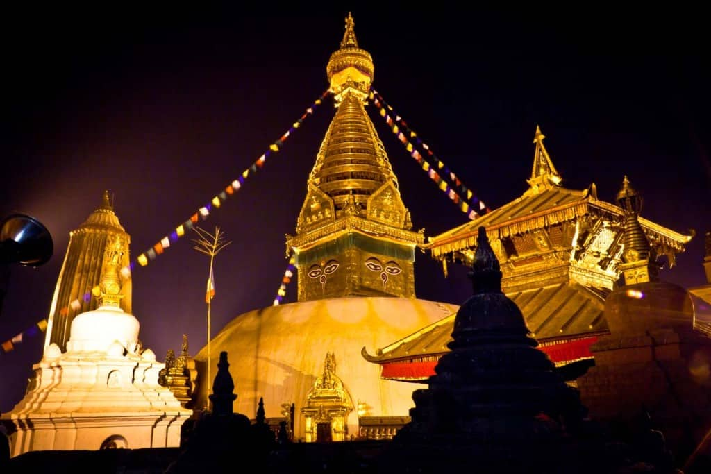
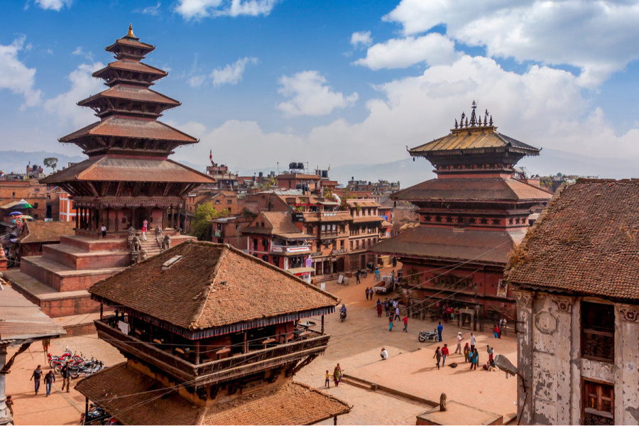

Activities & Attractions
Nepal include adventure sports like trekking to Everest Base Camp, bungee jumping, zip-lining, and
white-water
rafting, as well as wildlife safaris in Chitwan National Park and cultural sightseeing in places like
Kathmandu
and Pokhara. Visitors can also take scenic mountain flights, explore ancient temples and durbar
squares, and
experience local culture through village tours, festivals, and cuisine. Other options include
exploring ancient
cities, white-water rafting, and mountain biking.Some of the activities and attractions are:
Trekking and mountain
- Everest Base Camp Trek: This iconic, multi-day trek offers breathtaking views of Mount Everest and the surrounding Himalayan peaks.
- Poon Hill Trek: A shorter and more moderate trek in the Annapurna region, known for its stunning sunrise views over the Himalayas.
- Annapurna Circuit Trek: This trek showcases a diverse range of landscapes, from lush rhododendron forests to the arid trans-Himalayan terrain.
- Langtang Valley Trek: Explore towering peaks, traditional villages, and Tibetan culture on this high-altitude trek near Kathmandu.


Adventure sports
- Paragliding in Pokhara: Soar over Phewa Lake and enjoy panoramic views of the Annapurna range from Sarangkot Hill.
- Bungee jumping: Options include the Kushma Bungee Jump, Nepal's highest, and jumps at The Last Resort near the Tibet border or in Pokhara.
- River rafting: Nepal's rivers, fed by mountain snowmelt, provide excellent white-water rafting opportunities. Popular rivers include the Trishuli, Seti, and Bhote Koshi.
- Zip-lining: Pokhara and other adventure hubs offer zip-line adventures with scenic backdrops.



Cultural and historical exploration
- Kathmandu Durbar Square: Historic royal palace complex with intricate temples and courtyards (Hanuman Dhoka).
- Patan and Bhaktapur Durbar Squares: Explore these ancient cities to see stunning Newar architecture, intricate wood carvings, and historical palaces.
- Pashupatinath Temple: Witness Hindu funeral rites along the Bagmati River and observe spiritual rituals at this sacred temple complex.
- Lumbini: The birthplace of Lord Buddha, a significant Buddhist pilgrimage site with ancient monasteries and inscriptions.
- Janakpur:Janakpur is an important pilgrimage site for Hindus due to its connection with the Hindu epic, the Ramayana. It is believed that Goddess Sita was born here. It is famous for the Ram Janaki Temple.


